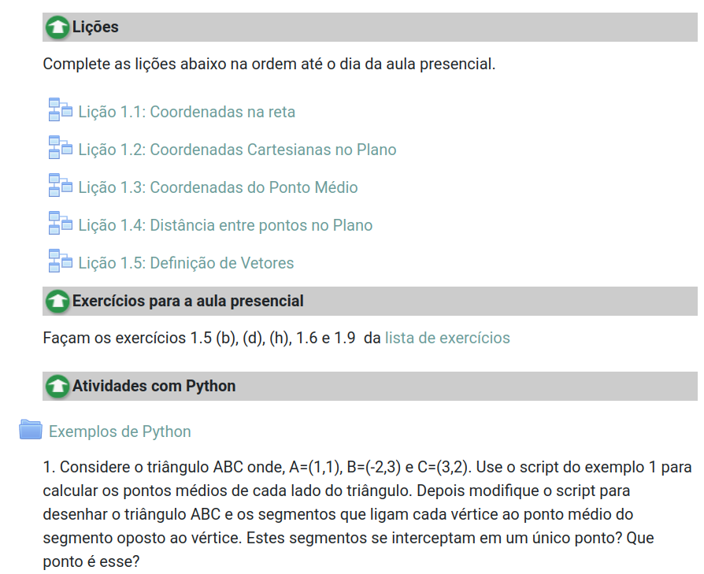
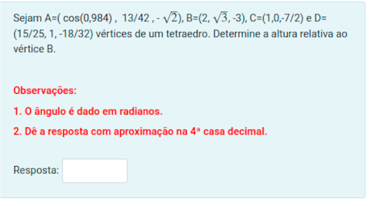

Uma Experiência em Geometria Analítica
Sala de Aula Invertida
Uma Experiência de Sala de Aula Invertida:
Em Geometria Analítica
A pandemia de covid nos forçou a criar muito matrial online para as aulas remotas. Eu mesmo acabei criando um curso inteiro de Geometria Analítica e Cálculo Vetorial em videoaulas no youtube! Além disso, também criei muito material no Moodle, que foi a plataforma que mais trabalhei no ensino remoto.
Neste semestre, com a volta das aulas presenciais “pós-pandemia”, decidi usar este material para aplicar a metodologia de sala de aula invertida. Aqui podem ser vistas todas as informações deste curso: Geometria Analítica - 2022-1
A seguir vou descrever como foi esta experiência.
Dinâmica do Curso
Dentro do Moodle eu dividi o conteúdo semanalmente. A dinâmica de cada semana era a seguinte:
- Os alunos faziam as Lições da semana no Moodle. Cada Lição era composta de uma videoaula, onde o conteúdo era apresentado, e um questionário bem elementar, apenas para revisar e reforçar o conteúdo assisitido. Em geral eram questões de multipla escolha.
- Depois de cumprida as Lições, os alunos deveriam tentar fazer alguns exercícios propostos, em um nível mais difícil, que seriam discutidos em sala na semana seguinte.
- Na semana seguinte, na aula presencial, o objetivo era discutir esses exercícios.

Lição: Este era um conteúdo típico semanal no Moodle
Como pode ser visto na figura acima, além do conteúdo ordinário, resolvi também trabalhar com eles um pouco de python, por três motivos:
- Geometria Analítica é um ambiente muito favorável para introduzir essa linguagem sem precisar ter visto programção alguma. Dá pra usar como se fosse uma calculadora ciêntífica bem robusta!
- Tornar o curso mais moderno. Afinal de contas, hoje em dia não faz muito sentido fazer contas à mão, uma vez que temos tantos recursos computacionais literalmente à palma da mão.
- O python é uma linguagem simples, moderna e que pode ser excutado usando apenas o browser de internet.
Aqui estão os exemplos de python que eu trabalhei com eles no curso.
Inicialmente, eu pedi para eles apresentarem os exercício propostos no quadro, para eu ver como tinham feito, e depois discutirmos. Isso não funcionou, pois eles tinham MUUUUUITA má vontade em ir para o quadro. Então, depois de algumas conversas com colegas, percebendo que eles têm muita dificuldade em leitura e interpretação de textos científicos, decidi por levar toda semana uma folha a ser trabalhada. Nessa folha sempre tinha um pequeno texto, introduzindo algum conceito ou técnica não abordada nas lições, e em seguida alguns exercícios a serem trabalhados. Isso sim funcionou bem! Percebi que eles tinham mais disposição pra fazer.
Nesta dinâmica, eu lia com eles o texto, procurando apontar as peculiaridades de se ler um texto científico em matemática. Depois eles seguiam tentando resolver os exercícios. O texto e os exercícios foram elaborados de modo que fosse fundamental completar as lições na semana anterior para conseguir fazer tanto a leitura do texto quanto a resolução dos exercícios. Veja aqui os textos que trabalhei.
Avaliação
Para avaliação eu usei três instrumentos: Os questionários, Provas e Testes Numéricos Online.
- Os questionários, dentro das lições, eram bem elementares e geralmente de múltiplas escolha. Sendo as mesmas questões para todos os alunos. O aluno poderia fazê-los várias vezes até acertar. Portanto, qualquer um que se dedicasse um pouco, facilmente poderia obter nota total. O objetivo era que eles não se preocupassem tanto com a nota, mas em entender a questão. Levando para a aula presencial as dúvidas referente àquelas questões que não conseguissem entender.
- A provas eram como de costume: teóricas, escritas e sem consulta. Foram aplicadas duas provas, uma para a parte plana e outra para a parte espacial.
- Os testes numéricos eram feitos no Moodle. Foram elaborados com dados aleatórios para cada aluno, com baixa dificuldade teórica mas com alguma dificuldade computacional, para que os alunos usassem algum recurso computacional para resolvê-los, de preferência a linguagem em python apresentado em sala.

Teste Numérico: Este é um exemplo de teste numérico.
Foram 40 lições, 2 provas e 5 testes numéricos. Inicialmente, foi proposto que a nota final seria dada por 30% da média dos questionário, 60% das médias das provas e 10% dos testes. Entretanto, devido à grande dificuldade deles com o retorno ao presencial, decidi por considerar 50% dos questionário, 40% das provas e 10% dos testes.
O que funcionou
Os textos com exercícios, como dito acima, funcionaram bem como experiência para sala invertida. Com eles consegui:
- Maior concentração dos alunos e engajamento.
- Trabalhar leitura e interpretação de texto, coisa que na aula tradicional é deixado a cargo do aluno.
- Os alunos perceberam que era fundamental a preparação antes da aula.
- Instigar a discussão e colaboração.
A diversificação na avaliação ajudou a aumentar a confiança dos alunos e a diminuir a desistência. Na aula tradicional, por conta da sobrecarga de trabalho na correção, costumamos usar apenas as provas escritas como avaliação, principalmente em turmas de massa. Com o Moodle fazendo a correção automática dos questionário e dos teses, pude pontuar o trabalho dos alunos fora da sala de aula. As provas escritas falham em medir este trabalho. Um aluno que tem insucesso nas provas escritas, não quer dizer que não aprendeu nada!
Tivemos mais tempos pondo a mão na massa. Com o material das videoaulas fazendo a parte de exposição do conteúdo e a ajuda do Moodle nas correções, sobrou mais tempo para trabalhar os conteúdos com os alunos presencialmente. Ver quais eram exatamente as dificuldades. Pude dar feedback imediado aos alunos quando estavam fazendo os exercícios em aula.
Percebi durante as aulas presenciais que eles tinham muitas dúvidas elementares, não tinham precisão para se expressar e dificuldade em reter informações. Nas provas escritas, coloquei uma questão só com perguntas elementares porém fundamentais para avaliar isso. Por exemplo:
- Qual é o objeto geométrico representado pela equação no espaço \(x+y+3z+1=0\) e qual é a relação do vetor \(u=(1,1,3)\) com esse objeto?
- Escreva a equação do círculo de raio 3 e centro (1,-2).
- Se \(u\) e \(v\) são vetores não nulos e \(u\cdot v=0\), o que pode-se dizer sobre eles?
Surpreendente muitos alunos não souberam responder a essas perguntas. Em 12 anos de trabalho, nunca pensei que haviam alunos que saiam dos cursos sem saber responder questões tão elementares, mesmo eu tendo repetido essas coisas diversas vezes, por isso nunca tinha as colocado em provas. Somente trabalhando com eles em sala, ouvindo eles falarem, que pude perceber isso.
O que não funcionou
Apesar da divesificação da avaliação ter sido um ponto positivo, a distribuição final de 50%, 40% e 10% não foi uma boa escolha. Alguns alunos acabaram por passar sem precisar fazer nenhuma prova, muitos precisando de pouquíssimos pontos. Isso não seria um problema, se não fosse o fato de ter constatado, nas provas, que estes alunos não sabiam conceitos muito elementares e fundamentais.
Como os questionários podiam ser feito várias vezes até obter a resposta correta, eles acabaram fazendo isso, mas depois não procuraram entender a resolução, ou seja, só se preocuparam em passar e não em aprender também, o que é muito frustrante para um professor. Vários alunos obtiveram 10 em todos os questionários, mas não sabiam determinar a equação de uma reta dados dois pontos, ou identificar a equação de um plano ou que dois vetores ortogonais tem produto escalar zero. Isso demonstra uma falta de compromisso com o próprio aprendizado. No primeiro dia de aula, e em vários momentos do curso, eu os advirto:
O que mantém a universidade pública são os impostos pagos por toda a sociedade, portanto ela espera que vocês saiam daqui com uma formação de qualidade. Garantir esta qualidade é parte do meu trabalho, mas também é responsabilidade de vocês!
Essa distribuição de pontos também não favoreceu que os alunos levassem o curso até o final. Aqueles que obtiveram pontuação mínima para passar abandonaram o curso. Outra vez revelando a total falta de compromisso com o próprio aprendizado, o que dificulta nosso trabalho, pois temos que levar isso em conta, além de ser muito frustante saber que muitos alunos não se interssam pelo que está sendo ensinado, apenas em obter um diploma.
Pedir para que eles resolvessem exercícios no quadro também não funcionou como eu esperava. A ideia da dinâmica era que eles pudessem cometer os erros antes de fazer as provas e ter tempo de se corrigirem. Entretanto eles ficam muito tensos e ansiosos. Querem sempre acertar e não recebem bem as críticas sobre seus erros. Talvez por serem calouros isso seja pior, parecem ainda não ter a maturidade necessária para lidar com a avaliação em frente aos colegas.
Poucos alunos se interessaram por aprender um pouco de python. A grande maioria tentou resolver as questões dos testes na mão ou usando outra ferramenta gráfica mais simples de manipular como o Geogebra. Falhei em construir testes que fossem difícéis de resolver usando essas ferramentas. É preciso pensar uma forma melhor de engajar os alunos nisso. Eles têm muita resistência em aprender qualquer coisa nova, mesmo que reconheçam sua importância. Eles estão sempre muito preocupados em só passar na disciplina.
Conclusão
A experiência como um todo foi muito boa, principalmente no que diz respeito à proximidade da relação professor-aluno. Muito melhor que a abordagem tradicional. Obviamente há pontos que melhorar. Quando possível pretendo aplicar esta metodologia novamente com algumas adptações.
A maior dificuldade é construir um bom material que viabilize a aplicação desta metologia. O tempo ganho com o trabalho presencial é garantido por uma dedicação prévia criando-se um bom material para substituir a aula expositiva (videoaulas é um exemplo) e um bom banco de questões/avaliações online.